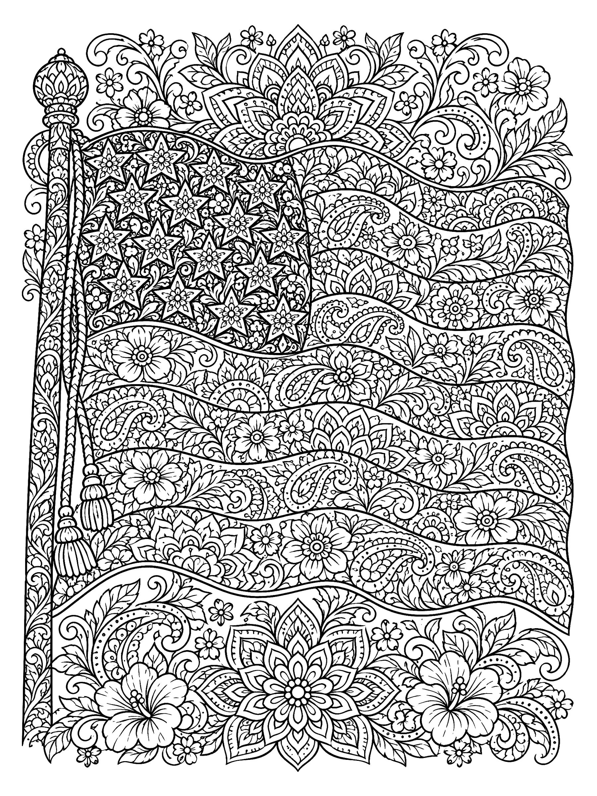
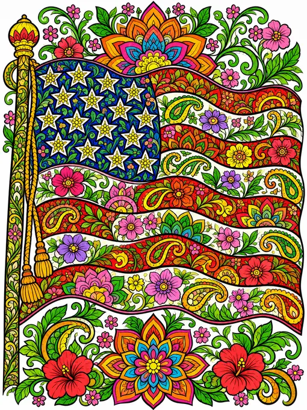

Stars and Stripes Paisley Coloring Page
Intricate Free printable · Letter and A4
A waving American flag where the stripes are filled with paisley and floral patterns and the stars are detailed.

Color ideas
Here is one way to color it. Good colors to pull out: brick red, dark brown, brown, orange, olive, forest green.
Want this small colored picture printed in the corner of the page as a guide? Open the print options and switch on Color guide.
About this page
Dense patterns with lots of small spaces to fill. Made for teens and adults who like a long, relaxing page.
It prints on one sheet of regular paper. For markers, use heavier paper or put a spare sheet underneath. In the print options you can also print two per sheet, switch to light gray lines, or add a name line.